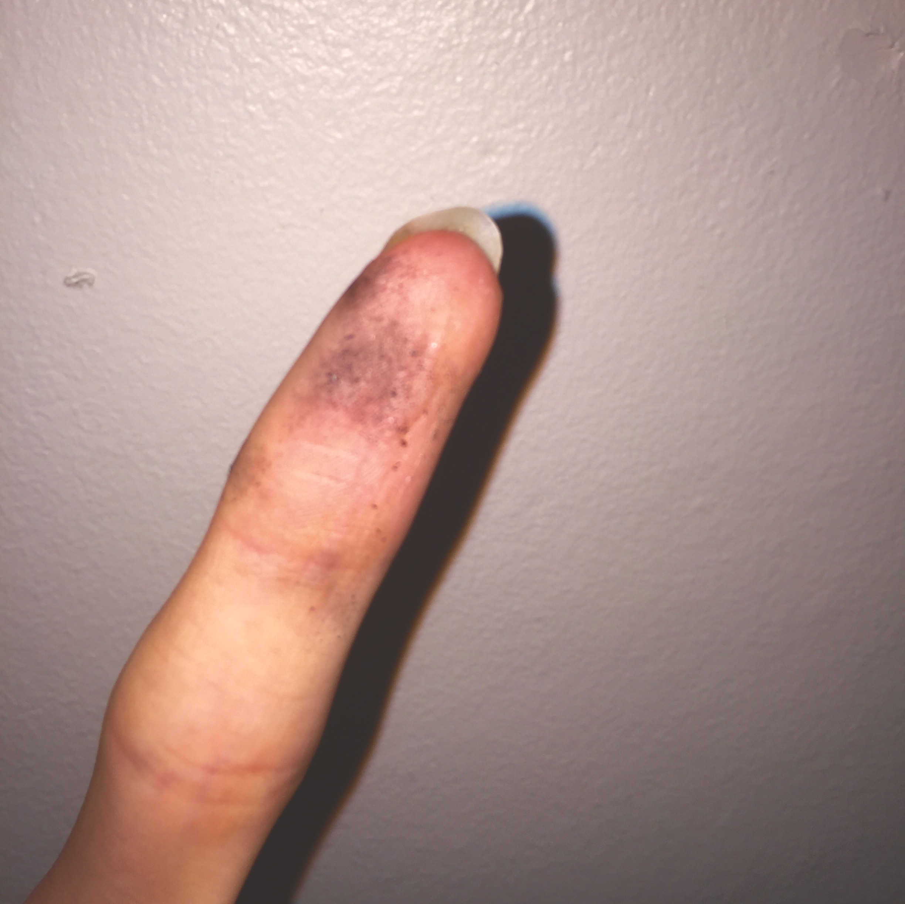

News
I'm not going to speak to this aside from saying things are fucked because I'm not qualified, but if you aren't aware of what's up with #FreeKesha you probably should be. Wish there was more uplifting news this past week but I haven't come across much.
I highlighted what a judge decided matters more than Kesha's continued victimization.No wonder we don't all speak up pic.twitter.com/uObgWzKxIl
— Pia Glenn (@PiaGlenn) February 19, 2016
Culture
Remember #WhitePeople? Producer Jose Antonio Vargas just launched his next project: #EmergingUS, which aims to leverage digital platforms in order to take a closer look at intersectional American identities. The project is currently raising funding through Beacon, so feel free to donate if it's something you're interested in.
In gaming news, Nintendo released Fire Emblem Fates , and announced a new free-to-start smart-device app titled Miitomo, launching in . I'm only excited because you can actually pick what clothes your Mii gets to wear.
Local
, Whitman College hosted its annual 2016 Power and Privilege Symposium, with the theme “Speak Up, Act Out” and a call to action for its participants. I participated in two panels, and I livetweeted highlights from both and the others I attended, which I have Storified here. I also published a reflection on the Symposium and its call to action in last week's Pioneer.
Speaking of The Pioneer, the newspaper recently announced that it is changing its name. Acknowledging the erasure of indigenous populations that a name like pioneer implies, the paper links the term with Whitman's historic positioning as a vehicle for white colonizing efforts and calls for further engagement with the college's past. (The much more contentious school mascot, Marc the Missionary, has yet to find his replacement.)
We will not be "The Pioneer" much longer, but we will continue to work on important issues on & off campus #unnaming https://t.co/fkqeW2jhMF
— Whitman Pioneer (@whitmanpio) February 19, 2016
If you're a member of the Whitman community, the Campus Climate Survey went out a little while ago, and while it isn't perfect, you should still take it. You should have received an email with the link from President Murray .
Opinion
Check out this quote by Sara Ahmed:
Whenever people keep being given a platform to say they have no platform, or whenever people speak endlessly about being silenced, you not only have a performative contradiction; you are witnessing a mechanism of power.
See also her post “Against Students”, which speaks to a lot of the conversations that seem to be happening surrounding academia these days.
If I hadn't written this before I would so write it now. So thankful for students fighting for more just worlds. https://t.co/j4ss8TpNA3
— feministkilljoy (@SaraNAhmed) February 14, 2016
This week's mix
|
on al t creating space on repeat. 22/02 2016. |
|
|---|---|

|
01 Advance Notice | Worriers |
| 02 Fire for the People | Blue Scholars | |
| 03 Future | Paramore | |
| 04 Drexler | Made in Heights | |
| 05 Dreams | The Cranberries | |
| 06 Call to Arms | Laura Welsh | |
| 07 Unstoppable | Sia | |
| 08 Gold Dust Woman | Fleetwood Mac | |
| 09 Moaning Lisa Smile | Wolf Alice | |
| 10 We Don't Believe What's On TV | twenty one pilots | |
| 11 You Can Do Better than Me | Death Cab for Cutie | |
| 12 Nobody's Fool | Avril Lavigne | |
| 13 邪神ト薔薇 | NIGHTMARE | |
| 14 Skeletons [Live] | Of Monsters and Men | |
| 15 We All Become ft. Ashley Barrett | Darren Korb | |